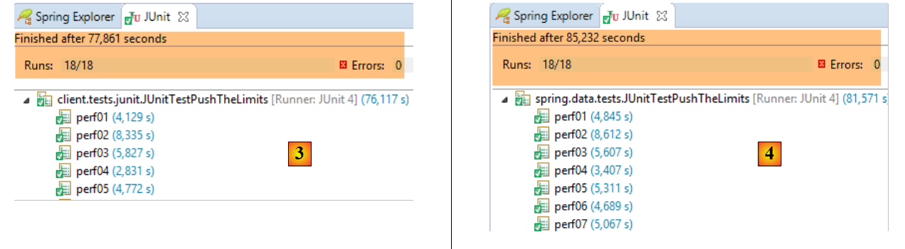
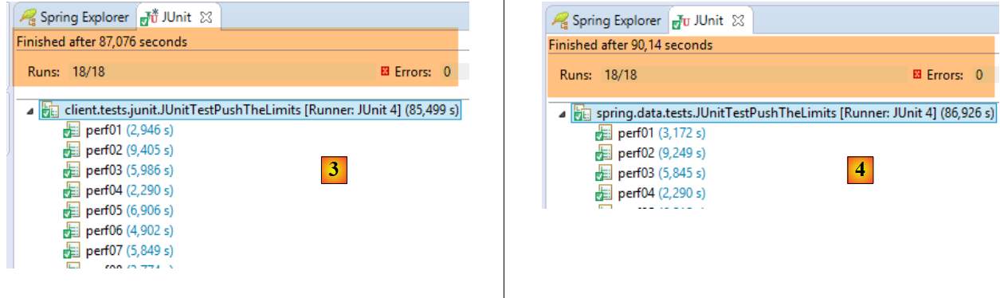
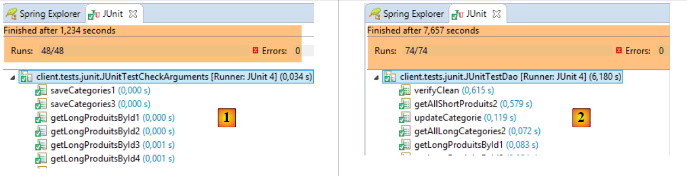

18. A client programmed for the /jSON web service
Now that the [dbproduitscategories] database is available on the web, we will write an application that uses it. We will then have the following client/server architecture:
 |
The client application will have three layers:
- an [HTTP Client] [3] layer to communicate with the /jSON web application that exposes the database;
- a [DAO] layer [2] that will present the same interface as the [DAO] layer [4];
- a JUnit testing layer [1] to verify that the client and server are functioning correctly; ## 18.1. The Eclipse project
The client's Eclipse project is as follows:
 |
 |  |  |
 |  |
- The [spring.webjson.client.config] package contains the Spring configuration for the [DAO] layer;
- the [spring.webjson.client.dao] package contains the implementation of the [DAO] layer;
- the [spring.webjson.client.entities] package contains the objects exchanged with the web service / JSON. We are familiar with all of them;
- the [spring.webjson.client.infrastructure] package contains the exception classes used by the project. We know them all; ## 18.2. Maven configuration of the project
The project is a Maven project configured by the following [pom.xml] file:
<project xmlns="http://maven.apache.org/POM/4.0.0" xmlns:xsi="http://www.w3.org/2001/XMLSchema-instance"
xsi:schemaLocation="http://maven.apache.org/POM/4.0.0 http://maven.apache.org/xsd/maven-4.0.0.xsd">
<modelVersion>4.0.0</modelVersion>
<groupId>dvp.spring.database</groupId>
<artifactId>spring-webjson-client-generic</artifactId>
<version>0.0.1-SNAPSHOT</version>
<description>Web server / JSON console client</description>
<name>spring-webjson-client-generic</name>
<properties>
<project.build.sourceEncoding>UTF-8</project.build.sourceEncoding>
<java.version>1.7</java.version>
</properties>
<parent>
<groupId>org.springframework.boot</groupId>
<artifactId>spring-boot-starter-parent</artifactId>
<version>1.2.3.RELEASE</version>
</parent>
<dependencies>
<!-- Spring -->
<dependency>
<groupId>org.springframework</groupId>
<artifactId>spring-web</artifactId>
</dependency>
<!-- JSON library used by Spring -->
<dependency>
<groupId>com.fasterxml.jackson.core</groupId>
<artifactId>jackson-core</artifactId>
</dependency>
<dependency>
<groupId>com.fasterxml.jackson.core</groupId>
<artifactId>jackson-databind</artifactId>
</dependency>
<!-- component used by Spring RestTemplate -->
<dependency>
<groupId>org.apache.httpcomponents</groupId>
<artifactId>httpclient</artifactId>
</dependency>
<!-- Google Guava -->
<dependency>
<groupId>com.google.guava</groupId>
<artifactId>guava</artifactId>
<version>16.0.1</version>
</dependency>
<!-- logging library -->
<dependency>
<groupId>org.springframework.boot</groupId>
<artifactId>spring-boot-starter-logging</artifactId>
</dependency>
<!-- Spring Boot Test -->
<dependency>
<groupId>org.springframework.boot</groupId>
<artifactId>spring-boot-starter-test</artifactId>
<scope>test</scope>
</dependency>
<!-- Spring Boot -->
<dependency>
<groupId>org.springframework.boot</groupId>
<artifactId>spring-boot</artifactId>
<scope>test</scope>
</dependency>
</dependencies>
<!-- plugins -->
<build>
<plugins>
<plugin>
<groupId>org.apache.maven.plugins</groupId>
<artifactId>maven-surefire-plugin</artifactId>
<version>2.18.1</version>
</plugin>
</plugins>
</build>
</project>
- lines 16–20: the parent Maven project [spring-boot-starter-parent], which allows us to define a number of dependencies without specifying their versions, as these are defined in the parent project;
- lines 24–27: although we are not writing a web application, we need the [spring-web] dependency, which includes the [RestTemplate] class that allows for easy interfacing with a web application or JSON;
- lines 29–36: a JSON library;
- lines 38–41: a dependency that will allow us to set a timeout for the client’s HTTP requests. A timeout is the maximum wait time for a server response. After this time, the client signals a timeout error by throwing an exception;
- lines 43–48: the Google Guava library;
- lines 50–53: the logging library;
- lines 54–64: the dependency for JUnit tests. It includes the JUnit 4 library required for testing. These dependencies have the [<scope>test</scope>] attribute, indicating that they are only needed for the testing phase. They are not included in the final project archive; ## 18.3. Spring Configuration
|
The [AppConfig] class handles the Spring configuration for the HTTP client. Its code is as follows:
package spring.webjson.client.config;
import java.util.ArrayList;
import java.util.List;
import org.springframework.beans.factory.config.ConfigurableBeanFactory;
import org.springframework.context.annotation.Bean;
import org.springframework.context.annotation.ComponentScan;
import org.springframework.context.annotation.Configuration;
import org.springframework.context.annotation.Scope;
import org.springframework.http.client.HttpComponentsClientHttpRequestFactory;
import org.springframework.http.converter.HttpMessageConverter;
import org.springframework.http.converter.json.MappingJackson2HttpMessageConverter;
import org.springframework.web.client.RestTemplate;
import com.fasterxml.jackson.databind.ObjectMapper;
import com.fasterxml.jackson.databind.ser.impl.SimpleBeanPropertyFilter;
import com.fasterxml.jackson.databind.ser.impl.SimpleFilterProvider;
@Configuration
@ComponentScan({ "spring.webjson.client.dao" })
public class AppConfig {
// constants
static private final int TIMEOUT = 1000;
static private final String URL_WEBJSON = "http://localhost:8081";
// JSON filters
@Bean
public ObjectMapper jsonMapper(RestTemplate restTemplate) {
return ((MappingJackson2HttpMessageConverter) (restTemplate.getMessageConverters().get(0))).getObjectMapper();
}
@Bean
@Scope(value = ConfigurableBeanFactory.SCOPE_PROTOTYPE)
ObjectMapper jsonMapperShortCategory(RestTemplate restTemplate) {
ObjectMapper jsonMapper = jsonMapper(restTemplate);
jsonMapper.setFilters(new SimpleFilterProvider().addFilter("jsonFilterCategorie",
SimpleBeanPropertyFilter.serializeAllExcept("products")));
return jsonMapper;
}
@Bean
@Scope(value = ConfigurableBeanFactory.SCOPE_PROTOTYPE)
ObjectMapper jsonMapperLongCategory(RestTemplate restTemplate) {
ObjectMapper jsonMapper = jsonMapper(restTemplate);
jsonMapper.setFilters(new SimpleFilterProvider().addFilter("jsonFilterCategory",
SimpleBeanPropertyFilter.serializeAllExcept()).addFilter("jsonFilterProduct",
SimpleBeanPropertyFilter.serializeAllExcept("category")));
return jsonMapper;
}
@Bean
@Scope(value = ConfigurableBeanFactory.SCOPE_PROTOTYPE)
ObjectMapper jsonMapperShortProduct(RestTemplate restTemplate) {
ObjectMapper jsonMapper = jsonMapper(restTemplate);
jsonMapper.setFilters(new SimpleFilterProvider().addFilter("jsonFilterProduct",
SimpleBeanPropertyFilter.serializeAllExcept("category")));
return jsonMapper;
}
@Bean
@Scope(value = ConfigurableBeanFactory.SCOPE_PROTOTYPE)
ObjectMapper jsonMapperLongProduct(RestTemplate restTemplate) {
ObjectMapper jsonMapper = jsonMapper(restTemplate);
jsonMapper.setFilters(new SimpleFilterProvider().addFilter("jsonFilterProduct",
SimpleBeanPropertyFilter.serializeAllExcept()).addFilter("jsonFilterCategory",
SimpleBeanPropertyFilter.serializeAllExcept("products"));
return jsonMapper;
}
@Bean
public RestTemplate restTemplate(int timeout) {
// Create the RestTemplate component
HttpComponentsClientHttpRequestFactory factory = new HttpComponentsClientHttpRequestFactory();
RestTemplate restTemplate = new RestTemplate(factory);
// JSON converter
List<HttpMessageConverter<?>> messageConverters = new ArrayList<HttpMessageConverter<?>>();
messageConverters.add(new MappingJackson2HttpMessageConverter());
restTemplate.setMessageConverters(messageConverters);
// connection timeout
factory.setConnectTimeout(timeout);
factory.setReadTimeout(timeout);
// result
return restTemplate;
}
@Bean
public int timeout() {
return TIMEOUT;
}
@Bean
public String urlWebJson() {
return URL_WEBJSON;
}
}
- line 20: the class is a Spring configuration class;
- line 21: other Spring components can be found in the [spring.webjson.client.dao] package;
- line 25: a timeout of one second (1000 ms) is set;
- lines 88–91: the bean that returns this value;
- line 26: the URL of the web service / JSON;
- lines 93–96: the bean that returns this value;
- lines 72–86: the configuration of the [RestTemplate] class that handles communication with the web service/JSON. When no configuration is required, it can be instantiated in the code with a simple [new RestTemplate()]. Here, we want to set the timeout for communication with the web service/JSON. The [timeout] bean on line 89 is passed as a parameter to the [restTemplate] method on line 73;
- line 75: the [HttpComponentsClientHttpRequestFactory] component is the one that allows us to set the timeout for communications (lines 82–83);
- line 76: the [RestTemplate] class is constructed using this component. Since it relies on this component to communicate with the web service / JSON, the exchanges will indeed be subject to the timeout;
- lines 78–80: we associate a JSON converter with the [RestTemplate] class. We already discussed this when studying the web service. The client and server exchange lines of text. A converter serializes an object into text and deserializes text back into an object. There can be multiple converters associated with the [RestTemplate] class, and the one chosen at any given time depends on the HTTP headers sent by the server. Here, we have only a JSON converter since the text lines exchanged are JSON;
- lines 82–83: the exchange timeouts are set;
- lines 28–70: define JSON filters. These are the same as those on the server presented in section 17.3.2.1;
- lines 29–32: the [jsonMapper] bean is the JSON mapper for the [MappingJackson2HttpMessageConverter] that we have associated with the [RestTemplate] class. We need this in the definition of the JSON filters;
- lines 34–41: a bean defining the JSON filter [category without its products]. The [jsonMapperShortCategory] method takes the [RestTemplate] bean defined on line 73 as a parameter;
- line 37: we call the [jsonMapper] method from line 30 to retrieve the JSON mapper;
- lines 38–39: we set the filter to return a category without its products;
- line 40: the JSON mapper is returned as configured;
- lines 42–51: the JSON filter to retrieve a category along with its products;
- lines 53–60: the JSON filter to retrieve a product without its category;
- lines 62–70: the JSON filter to retrieve a product with its category;
All these beans will be available to the [DAO] layer code as well as to JUnit tests.
18.4. Implementation of the HTTP client
 |
Above is the [HTTP Client] layer that communicates with the web service we just built. We will now examine it.
 |
The [Client] class handles communication with the web service / JSON. It implements the following [IClient] interface:
package spring.webjson.client.dao;
import org.springframework.http.HttpMethod;
public interface IClient {
public <T1, T2> T1 getResponse(String url, HttpMethod method, int errStatus, T2 body);
}
The interface has only one method [getResponse]:
- line 6: the [getResponse] method is a generic method parameterized by two types:
- [T1]: is the expected response type from the server in [Response<T1>], for example [List<Category>],
- [T2]: is the type of the JSON parameter posted by POST operations, for example [List<Product>];
- line 6: the [getResponse] method returns a result of type T1, for example [List<Category>];
- line 6: the parameters of [getResponse] are as follows:
- [String url]: the URL to query;
- [HttpMethod method]: HTTP method of the request, GET or POST as appropriate,
- [int errStatus]: error code to be used in the [DaoException] class, if an error occurs during communication with the server,
- [T2 body]: the value to post if a POST request is made;
The [Client] class implements the [IClient] interface as follows:
package spring.webjson.client.dao;
import java.net.URI;
import java.util.ArrayList;
import java.util.List;
import org.springframework.beans.factory.annotation.Autowired;
import org.springframework.core.ParameterizedTypeReference;
import org.springframework.http.HttpMethod;
import org.springframework.http.MediaType;
import org.springframework.http.RequestEntity;
import org.springframework.http.ResponseEntity;
import org.springframework.stereotype.Component;
import org.springframework.web.client.RestTemplate;
import spring.webjson.client.infrastructure.DaoException;
@Component
public class Client implements IClient {
// injections
@Autowired
protected RestTemplate restTemplate;
@Autowired
protected String webJsonServiceUrl;
// local
private String simpleClassName = getClass().getSimpleName();
// generic request
@Override
public <T1, T2> T1 getResponse(String url, HttpMethod method, int errStatus, T2 body) {
...
}
// list of error messages for an exception
protected List<String> getMessagesForException(Exception exception) {
...
}
}
- line 18: the [Client] class is a Spring component and can therefore be injected into other Spring components;
- lines 22–23: injection of the [RestTemplate] bean defined in [AppConfig] (see section 18.3), which handles communication with the server;
- lines 24–25: injection of the web service URL / JSON defined in [AppConfig] (see section 18.3);
- Lines 37–39: The private method [getMessagesForException] is a utility method used to retrieve the list of error messages contained in an exception. We have encountered it several times;
Let’s continue:
// generic query
@Override
public <T1, T2> T1 getResponse(String url, HttpMethod method, int errStatus, T2 body) {
// the server response
ResponseEntity<Response<T1>> response;
try {
// prepare the request
RequestEntity<?> request = null;
if (method == HttpMethod.GET) {
request = RequestEntity.get(new URI(String.format("%s%s", urlServiceWebJson, url)))
.accept(MediaType.APPLICATION_JSON).build();
}
if (method == HttpMethod.POST) {
request = RequestEntity.post(new URI(String.format("%s%s", urlServiceWebJson, url)))
.header("Content-Type", "application/json").accept(MediaType.APPLICATION_JSON).body(body);
}
// execute the request
response = restTemplate.exchange(request, new ParameterizedTypeReference<Response<T1>>() {
});
} catch (Exception e) {
// wrap the exception
throw new DaoException(errStatus, e, simpleClassName);
}
...
}
- line 18: the statement that sends the request to the server and receives its response. The [RestTemplate] component offers a large number of methods for interacting with the server, but only the [exchange] method accepts generic parameters. This is why it was chosen. The second parameter specifies the type of the expected response. The first parameter is the [RequestEntity] request (line 8). The result of the [exchange] method is of type [ResponseEntity<Response<T1>>] (line 5). The [ResponseEntity] type encapsulates the server’s complete response, including HTTP headers and the document sent by the server. Similarly, the [RequestEntity] type encapsulates the client’s entire request, including HTTP headers and any posted data;
- lines 8–16: we need to construct the [RequestEntity] request. It differs depending on whether we use a GET or a POST request;
- line 10: the request for a GET. The [RequestEntity] class provides static methods to create GET, POST, HEAD, and other requests. The [RequestEntity.get] method allows you to create a GET request by chaining the various methods that build it:
- the [RequestEntity.get] method takes the target URL as a parameter in the form of a URI instance,
- the [accept] method allows you to define the elements of the [Accept] HTTP header. Here, we specify that we accept the [application/json] type that the server will send;
- the [build] method uses this information to construct the [RequestEntity] type of the request;
- Line 14: the POST request. The [RequestEntity.post] method allows you to create a POST request by chaining together the various methods that build it:
- the [RequestEntity.post] method takes the target URL as a parameter in the form of a URI instance,
- the [header] method defines an HTTP header. Here, we send the [Content-Type: application/json] header to the server to indicate that the posted data will arrive in the form of a JSON string;
- the [accept] method allows us to indicate that we accept the [application/json] type that the server will send;
- the [body] method sets the posted value. This is the fourth parameter of the generic [getResponse] method (line 1);
- Lines 20–23: If a communication error occurs with the server, a [DaoException] is thrown with the error code set to the [errStatus] parameter passed as the third parameter to the generic [getResponse] method (line 3);
The [getResponse] method continues as follows:
// generic request
@Override
public <T1, T2> T1 getResponse(String url, HttpMethod method, int errStatus, T2 body) {
...
// retrieve the response body
Response<T1> entity = response.getBody();
int status = entity.getStatus();
// Server-side errors?
if (status != 0) {
// throw an exception
throw new DaoException(status, new RuntimeException(entity.getException()), simpleClassName);
} else {
// All good
return entity.getBody();
}
}
- line 4: we have received the response from the server. It is of type [ResponseEntity<Response<T1>>] (line 5 of the previous code example) where the [Response] class is the class already used on the server side:
package spring.webjson.client.dao;
public class Response<T> {
// ----------------- properties
// operation status
private int status;
// any exception
private String exception;
// response body
private T body;
// constructors
public Response() {
}
public Response(int status, String exception, T body) {
this.status = status;
this.exception = exception;
this.body = body;
}
// getters and setters
...
}
Let's go back to the [getResponse] method:
- line 6: we retrieve the [Response<T1>] object encapsulated in the response. This type has the fields [int status, String exception, T1 body];
- line 7: we retrieve the [status] of the response, which is an error code;
- lines 9–12: if there is an error, we throw an exception containing the two pieces of information [status, exception] from the server’s response;
- line 14: otherwise, we return the [T1] type contained in the [Response<T1>] response;
The [Client] class is generic. It can be used for any web/JSON client.
18.5. Implementation of the [Dao] layer
 |
 |
18.5.1. The [AbstractDao] class
The client-side [DAO] layer has the same interface as the server-side [DAO] layer (see section 4.7):
package spring.webjson.client.dao;
import java.util.List;
import spring.webjson.client.entities.AbstractCoreEntity;
public interface IDao<T extends AbstractCoreEntity> {
// list of all T entities
public List<T> getAllShortEntities();
public List<T> getAllLongEntities();
// specific entities - short version
public List<T> getShortEntitiesById(Iterable<Long> ids);
public List<T> getShortEntitiesById(Long... ids);
public List<T> getShortEntitiesByName(Iterable<String> names);
public List<T> getShortEntitiesByName(String... names);
// specific entities - long version
public List<T> getLongEntitiesById(Iterable<Long> ids);
public List<T> getLongEntitiesById(Long... ids);
public List<T> getLongEntitiesByName(Iterable<String> names);
public List<T> getLongEntitiesByName(String... names);
// Update multiple entities
public List<T> saveEntities(Iterable<T> entities);
public List<T> saveEntities(@SuppressWarnings("unchecked") T... entities);
// Delete all entities
public void deleteAllEntities();
// Delete multiple entities
public void deleteEntitiesById(Iterable<Long> ids);
public void deleteEntitiesById(Long... ids);
public void deleteEntitiesByName(Iterable<String> names);
public void deleteEntitiesByName(String... names);
public void deleteEntitiesByEntity(Iterable<T> entities);
public void deleteEntitiesByEntity(@SuppressWarnings("unchecked") T... entities);
}
The [AbstractDao] class implements the [IDao] interface. It is analogous to the class of the same name on the server side (see Section 4.8). It serves as the parent class for the [DaoCategorie] and [DaoProduit] classes. It is not identical for two reasons:
- on the server side, the [AbstractDao] class manages one piece of information:
// injections
@Autowired
@Qualifier("maxPreparedStatementParameters")
protected int maxPreparedStatementParameters;
which we don't need here.
- On the server side, the [AbstractDao] class uses [@Transactional] annotations to encapsulate each method within a transaction. On the client side, there is no database to manage. This annotation therefore disappears;
The [AbstractDao] class simply verifies the validity of the call parameters for the methods of the [IDao] interface before delegating the call to the child classes:
package spring.webjson.client.dao;
import java.util.ArrayList;
import java.util.List;
import spring.webjson.client.entities.AbstractCoreEntity;
import spring.webjson.client.infrastructure.MyIllegalArgumentException;
import com.google.common.collect.Lists;
public abstract class AbstractDao<T1 extends AbstractCoreEntity> implements IDao<T1> {
// local
protected String simpleClassName = getClass().getSimpleName();
@Override
public List<T1> getShortEntitiesById(Iterable<Long> ids) {
// argument validity
List<T1> entities = checkNullOrEmptyArgument(true, ids);
if (entities != null) {
return entities;
}
// result
return getShortEntitiesById(Lists.newArrayList(ids));
}
@Override
public List<T1> getShortEntitiesById(Long... ids) {
// Check argument validity
List<T1> entities = checkNullOrEmptyArgument(true, ids);
if (entities != null) {
return entities;
}
// result
return getShortEntitiesById(Lists.newArrayList(ids));
}
...
@Override
public void deleteEntitiesByEntity(@SuppressWarnings("unchecked") T1... entities) {
...
}
// private methods ----------------------------------------------
private <T3> List<T1> checkNullOrEmptyArgument(boolean checkEmpty, Iterable<T3> elements) {
// Are the elements null?
if (elements == null) {
throw new MyIllegalArgumentException(222, new NullPointerException("The argument cannot be null"),
simpleClassName);
}
// Are the elements empty?
if (!elements.iterator().hasNext()) {
if (checkEmpty) {
throw new MyIllegalArgumentException(223, new RuntimeException("The argument cannot be an empty list"), simpleClassName);
} else {
return new ArrayList<T1>();
}
}
// default result
return null;
}
@SuppressWarnings("unchecked")
private <T3> List<T1> checkNullOrEmptyArgument(boolean checkEmpty, T3... elements) {
// Are the elements null?
if (elements == null) {
throw new MyIllegalArgumentException(222, new NullPointerException("The argument cannot be null"), simpleClassName);
}
// Is elements empty?
if (elements.length == 0) {
if (checkEmpty) {
throw new MyIllegalArgumentException(223, new RuntimeException("The argument cannot be an empty list"),
simpleClassName);
} else {
return new ArrayList<T1>();
}
}
// default result
return null;
}
// protected methods ----------------------------------------------
abstract protected List<T1> getShortEntitiesById(List<Long> ids);
abstract protected List<T1> getShortEntitiesByName(List<String> names);
abstract protected List<T1> getLongEntitiesById(List<Long> ids);
abstract protected List<T1> getLongEntitiesByName(List<String> names);
abstract protected List<T1> saveEntities(List<T1> entities);
abstract protected void deleteEntitiesById(List<Long> ids);
abstract protected void deleteEntitiesByName(List<String> names);
}
18.5.2. The [DaoCategorie] class
 |
The [DaoCategorie] class is as follows:
package spring.webjson.client.dao;
import java.util.List;
import org.springframework.beans.factory.annotation.Autowired;
import org.springframework.context.ApplicationContext;
import org.springframework.http.HttpMethod;
import org.springframework.stereotype.Component;
import spring.webjson.client.entities.Category;
import spring.webjson.client.entities.CoreCategory;
import spring.webjson.client.entities.CoreProduct;
import spring.webjson.client.entities.Product;
import spring.webjson.client.infrastructure.DaoException;
import com.fasterxml.jackson.core.type.TypeReference;
import com.fasterxml.jackson.databind.ObjectMapper;
@Component
public class DaoCategory extends AbstractDao<Category> {
@Autowired
private ApplicationContext context;
@Autowired
private IClient client;
...
}
- line 19: the [DaoClient] class is a Spring component into which other Spring components can be injected;
- line 20: the [DaoClient] class extends the [AbstractDao<Category>] class we just saw and therefore implements the [IDao<Category>] interface;
- lines 22–23: we inject the Spring context to access its beans;
- lines 24–25: we inject the HTTP client we just built;
The implementations of the various methods of the [DaoCategorie] interface all follow the same pattern. We will present three methods, one based on a [GET] operation, the other two on a [POST] operation.
18.5.2.1. The [getAllLongEntities] method
The [getAllLongEntities] method returns the long version of all categories in the database:
@Override
public List<Category> getAllLongEntities() {
try {
// JSON filters
ObjectMapper mapper = context.getBean("jsonMapperLongCategory", ObjectMapper.class);
// get all categories
Object map = client.<List<Category>, Void> getResponse("/getAllLongCategories", HttpMethod.GET, 232, null);
// list of categories List<Category>
List<Category> categories = mapper.readValue(mapper.writeValueAsString(map),
new TypeReference<List<Category>>() {
});
// Recreate the product-to-category link
return linkCategoryWithProducts(categories);
} catch (DaoException e1) {
throw e1;
} catch (Exception e2) {
throw new DaoException(233, e2, simpleClassName);
}
}
- line 2: the method returns the list of categories in their long versions;
- line 5: the JSON mapper that will serialize the posted value (there isn’t one) and deserialize the response returned by the [Client] class (categories in their long versions);
- line 7: we call the [getResponse] method of the [Client] class. This method handles communication with the web service / JSON. Its parameters are as follows:
- the URL of the service being queried [/getAllLongCategories];
- the [GET] method to use;
- the error code to use if an error occurs (232);
- the posted value. Here, there is none;
- Line 7: In the expression [client.<List<Category>, Void>], we specify the actual parameters of the generic types [T1, T2] for the [getResponse] method. Recall that [T1] is the type of the expected response and [T2] is the type of the posted value. Here, we expect a result of type [List<Category>] and there is no posted value [Void];
- Line 7: The result returned by the [getResponse] method is stored in an object of type [Object]. This is a bit odd since we expect a type [List<Category>]. This is because the [getResponse] method, which works with generic types [T1, T2], always returns a [java.util.LinkedHashMap] type, which must then be processed to return the correct type;
- Line 9: We return the list of categories. To do this, we serialize the [map] object [mapper.writeValueAsString(map)] into a JSON string, which we then deserialize back into a [List<Category>] type;
- line 13: we have received a list of categories, some of which may have products. We receive the short version of these products. Therefore, when they are deserialized, the created [Product] objects have their [category] field set to null. The [linkCategoryWithProducts] method re-establishes the link between a [Product] and its [Category];
- lines 14–15: we catch the [DaoException] that the [getResponse] method might have thrown and immediately rethrow it. This unusual behavior is because if we don’t do this, the [DaoException] will be caught by lines 16–18, and we don’t want that;
- lines 16–18: we catch all other exceptions to encapsulate them in a [DaoException] type. Recall that the [DAO] layer must only throw this type of exception;
The [linkCategorieWithProduits] method, which re-establishes the links between [Product] entities and [Category] entities, is as follows:
private List<Category> linkCategoryWithProducts(List<Category> categories) {
for (Category category : categories) {
List<Product> products = category.getProducts();
if (products != null) {
for (Product product : products) {
product.setCategory(category);
}
}
}
return categories;
}
18.5.2.2. Managing JSON filters
Let’s revisit JSON filter handling in the previous [getAllLongEntities] method:
@Override
public List<Category> getAllLongEntities() {
try {
// JSON filters
ObjectMapper mapper = context.getBean("jsonMapperLongCategorie", ObjectMapper.class);
// get all categories
Object map = client.<List<Category>, Void> getResponse("/getAllLongCategories", HttpMethod.GET, 232, null);
// list of categories List<Category>
List<Category> categories = mapper.readValue(mapper.writeValueAsString(map),
new TypeReference<List<Category>>() {
});
- Line 5: We retrieve a JSON mapper from the Spring context that can handle the long versions of the categories. Let’s revisit the definition of this mapper in the Spring configuration [AppConfig]:
// JSON filters
@Bean
public ObjectMapper jsonMapper(RestTemplate restTemplate) {
return ((MappingJackson2HttpMessageConverter) (restTemplate.getMessageConverters().get(0))).getObjectMapper();
}
@Bean
@Scope(value = ConfigurableBeanFactory.SCOPE_PROTOTYPE)
ObjectMapper jsonMapperLongCategory(RestTemplate restTemplate) {
ObjectMapper jsonMapper = jsonMapper(restTemplate);
jsonMapper.setFilters(new SimpleFilterProvider().addFilter("jsonFilterCategory",
SimpleBeanPropertyFilter.serializeAllExcept()).addFilter("jsonFilterProduct",
SimpleBeanPropertyFilter.serializeAllExcept("category")));
return jsonMapper;
}
@Bean
public RestTemplate restTemplate(int timeout) {
...
}
- The [jsonMapperLongCategorie] bean requested by the [getAlllongEntities] method is the bean in lines 7–15;
- line 10: the mapper is provided by the [jsonMapper] method in lines 2–5. We can see that this JSON mapper belongs to the [RestTemplate] object, which manages HTTP exchanges between the client and the server. This mapper is used by default to:
- serialize the value posted to the server;
- deserialize the response returned by the server;
Let’s return to the code for [getAllLongEntities]:
// JSON filters
ObjectMapper mapper = context.getBean("jsonMapperLongCategorie", ObjectMapper.class);
// get all categories
Object map = client.<List<Category>, Void> getResponse("/getAllLongCategories", HttpMethod.GET, 232, null);
// the list of categories List<Category>
List<Category> categories = mapper.readValue(mapper.writeValueAsString(map),
new TypeReference<List<Category>>() {
});
// Reconstruct the product-to-category link
return linkCategoryWithProducts(categories);
- Line 2: We retrieve the [jsonMapperLongCategorie] mapper from the Spring context;
- line 4: the [getResponse] method is executed. This involves:
- automatic serialization of the posted value (there isn't one here);
- automatic deserialization of the received response, here a List<Category> type. This is because the [Category] entity has a JSON filter [jsonFilterCategory], which needed to be handled. This is the reason for line 2;
- line 6: the result undergoes a second serialization/deserialization with this same mapper to retrieve the List<Category> type. Line 4: the type returned by [getResponse] is an [Object] type;
In the following methods, note that the JSON mapper requested from the Spring context is used for both the posted value (serialization) and the received value (deserialization). If one or both values have a JSON filter, they must be configured. The mapper can therefore have up to two configured filters. In the following, this never happens. Either the posted value has no filter (List<Long>, List<String>), or the received value has none (List<CoreCategory>, List<CoreProduct>). The entities with a JSON filter are only [Category] and [Product].
18.5.2.3. The [getShortEntitiesById] method
The [getShortEntitiesById] method returns the short versions of the categories whose primary keys it receives as parameters:
@Override
protected List<Category> getShortEntitiesById(List<Long> ids) {
try {
// JSON filters
ObjectMapper mapper = context.getBean("jsonMapperShortCategory", ObjectMapper.class);
// Get a category without its products
Object map = client.<List<Category>, List<Long>> getResponse("/getShortCategoriesById", HttpMethod.POST, 204, ids);
// the category
return mapper.readValue(mapper.writeValueAsString(map), new TypeReference<List<Category>>() {
});
} catch (DaoException e1) {
throw e1;
} catch (Exception e2) {
throw new DaoException(223, e2, simpleClassName);
}
}
- line 5: the JSON mapper that will serialize the posted value (a list of primary keys) and deserialize the response returned by the [Client] class (categories in their short versions). The chosen filter will have no effect on the posted value since there is no filter for the elements in the posted list;
- line 7: we call the [getResponse] method of the parent class. This method handles communication with the web service / JSON. Its parameters are as follows:
- the URL of the service being queried [/getShortCategoriesById];
- the [POST] method to use;
- the error code to use if an error occurs (204);
- the posted value. Here, it is a list of primary keys;
- line 7: in the expression [client.<List<Category>, List<Long>>], we specify the actual parameters of the generic types [T1, T2] for the [getResponse] method. Recall that [T1] is the type of the expected response and [T2] is the type of the posted value. Here, we expect a result of type [List<Category>] and the posted value is a list of primary keys of type [List<Long>];
- Line 7: The result returned by the [getResponse] method is stored in an [Object] type;
- Line 9: The list of categories is returned. To do this, the [map] object [mapper.writeValueAsString(map)] is serialized into a JSON string, which is then deserialized into a [List<Category>] type; #### 18.5.2.4. The [saveEntities] method
The [saveEntities] method persists categories to the database. Its code is as follows:
@Override
protected List<Category> saveEntities(List<Category> entities) {
try {
// JSON filters
ObjectMapper mapper = context.getBean("jsonMapperLongCategorie", ObjectMapper.class);
// add categories
Object map = client.<List<CoreCategory>, List<Category>> getResponse("/saveCategories", HttpMethod.POST, 200,
entities);
// the list of added core categories
List<CoreCategory> coreCategories = mapper.readValue(mapper.writeValueAsString(map),
new TypeReference<List<CoreCategory>>() {
});
// update the categories with the received information
for (int i = 0; i < entities.size(); i++) {
Category category = entities.get(i);
CoreCategory coreCategory = coreCategories.get(i);
category.setId(coreCategory.getId());
List<Product> products = category.getProducts();
if (products != null) {
List<CoreProduct> coreProducts = coreCategory.getCoreProducts();
for (int j = 0; j < products.size(); j++) {
Product product = products.get(j);
product.setId(coreProducts.get(j).getId());
product.setCategoryId(category.getId());
product.setCategory(category);
}
}
}
return entities;
} catch (DaoException e1) {
throw e1;
} catch (Exception e2) {
throw new DaoException(220, e2, simpleClassName);
}
}
- line 2: the [saveEntities] method is used to persist the categories passed as parameters in the database. It returns these same categories enriched with their primary keys. If the categories are passed along with products, those are also persisted;
- line 5: the JSON mapper that will serialize the posted value (a list of categories in their long versions) and deserialize the response returned by the [Client] class ([CoreCategory] objects). The chosen filter will have no effect on the result since the elements in the list received as a response are not filtered;
- line 7: we call the parent’s [getResponse] method to handle communication with the web service / JSON;
- the first parameter is the URL [/saveCategories];
- the second parameter is the HTTP method to use, in this case a [POST];
- the third parameter is the error code to use if an error occurs (200);
- the last parameter is the posted value, here the list of categories to persist;
- line 7: the generic parameters [T1, T2] of the [getResponse] method are here [List<CoreCategory>, List<Category>]. The first type is that of the expected response, the second is the type of the posted value;
- line 7: we store the obtained response in a [Object] type;
- line 9: we reconstruct the response of type [List<CoreCategory>]. The response to be returned is of type [List<Category>] (line 2) and not [List<CoreCategory>]. The received response is the list of primary keys for the persisted categories and products;
- lines 14–28: the received primary keys are assigned to the categories and products (lines 17, 23, 24). Additionally, the [Product] → [Category] relationships are reconstructed (lines 24–25);
All other methods follow the same pattern.
18.6. The JUnit Test
Let’s return to the client/server architecture currently under development:
 |
We have built a [DAO] layer [2] with the same interface as the [DAO] layer [4]. To test the [DAO] layer [2], we can therefore use the JUnit tests that were used to test the [DAO] layer [4]:
 |
These three tests are run using the following test configurations:
 |  |
 |
The results of the three tests are as follows:
 |
 |
- in [1], the [JUnitTestCheckArguments] test;
- in [2], the [JUnitTestDao] test;
- in [3], the [JUnitTestPushTheLimits] test executed on the client side (project [spring-webjson-client-generic]);
- in [3], the [JUnitTestPushTheLimits] test executed on the server side (project [spring-jdbc-generic-04]). We observe that the network layer causes very little slowdown compared to that caused by access to the DBMS; ## 18.7. Web service / JSON / JPA / Hibernate implementation
We will now examine the following architecture:
 |
The modification is in [1]. The server’s [DAO] layer relies on a JPA implementation. We will first use a JPA / Hibernate implementation.
18.7.1. The Eclipse project
For now, the projects loaded into Eclipse are as follows:
 |
The [spring-webjson-server-jdbc-generic] project was based on the [spring-jdbc-generic-04] project, which configures the DAO / JDBC layer for accessing the MySQL DBMS. We will create a new project [spring-webjson-server-jpa-generic], which will rely on the [spring-jpa-generic] project that configures the DAO/JPA/JDBC layer for accessing the MySQL DBMS. We know that in both cases, the [DAO] layer implements the same [IDao] interface. The code for the [web] layer therefore remains unchanged.
We can create the [spring-webjson-server-jpa-generic] project by copying and pasting from the [spring-webjson-server-jdbc-generic] project:
 |
- in [1], specify a folder created specifically for the new project;
 |
There are three types of changes to make. The first ones are in the project’s Maven configuration file [pom.xml]:
<project xmlns="http://maven.apache.org/POM/4.0.0" xmlns:xsi="http://www.w3.org/2001/XMLSchema-instance"
xsi:schemaLocation="http://maven.apache.org/POM/4.0.0 http://maven.apache.org/xsd/maven-4.0.0.xsd">
<modelVersion>4.0.0</modelVersion>
<groupId>dvp.spring.database</groupId>
<artifactId>spring-webjson-server-jpa-generic</artifactId>
<version>0.0.1-SNAPSHOT</version>
<name>spring-webjson-server-jpa-generic</name>
<description>Spring MVC demo</description>
<parent>
<groupId>org.springframework.boot</groupId>
<artifactId>spring-boot-starter-parent</artifactId>
<version>1.2.3.RELEASE</version>
</parent>
<dependencies>
<!-- web layer -->
<dependency>
<groupId>org.springframework.boot</groupId>
<artifactId>spring-boot-starter-web</artifactId>
</dependency>
<!-- [DAO] layer -->
<dependency>
<groupId>dvp.spring.database</groupId>
<artifactId>spring-jpa-generic</artifactId>
<version>0.0.1-SNAPSHOT</version>
</dependency>
</dependencies>
<!-- plugins -->
<build>
<plugins>
<plugin>
<groupId>org.apache.maven.plugins</groupId>
<artifactId>maven-surefire-plugin</artifactId>
<version>2.18.1</version>
</plugin>
</plugins>
</build>
</project>
- line 5: change the name of the Maven artifact;
- lines 24–28: the dependency is now on the [spring-jpa-generic] project and no longer on [spring-jdbc-generic-04];
In the end, the dependencies are as follows:
 |
Once this is done, we resolve all the import issues that appeared in the various classes. For example, the [Product, Category] entities are no longer found in the [spring-jdbc-generic-04] project but in the [spring-jpa-generic] project. Pressing [Ctrl-Shift-O] in a class’s code is sufficient to regenerate the imports.
The final change needs to be made in the [AppConfig] configuration file:
package spring.webjson.server.config;
import org.springframework.context.annotation.ComponentScan;
import org.springframework.context.annotation.Configuration;
import org.springframework.context.annotation.Import;
@Configuration
@ComponentScan(basePackages = { "spring.webjson.server.service" })
@Import({ spring.data.config.AppConfig.class, WebConfig.class })
public class AppConfig {
}
- Line 9: We now import the configuration from the [spring-jpa-generic] project instead of the [spring-jdbc-generic-04] project;
That’s it—we’re ready. We start the web service with the [spring-webjson-server-jpa-generic-hibernate-eclipselink] configuration:
 |  |
Then we run the three tests for the generic client [spring-webjson-client-generic]:
 |
 |
- in [1], the [JUnitTestCheckArguments] test (run configuration [spring-webjson-client-generic-JUnitTestCheckArguments]);
- in [2], the [JUnitTestDao] test (execution configuration [spring-webjson-client-generic-JUnitTestDao]);
- in [3], the [JUnitTestPushTheLimits] test run on the client side (run configuration [spring-webjson-client-generic-JUnitTestPushTheLimits]);
- in [4], the [JUnitTestPushTheLimits] test executed on the server side (run configuration [spring-jpa-generic-JUnitTestPushTheLimits-hibernate-eclipselink]);
18.7.2. Why does it work?
It works, and yet when you look closely at the code, it’s surprising that it does. While the [DAO] layers implemented by the [spring-jdbc-generic-04] and [spring-jpa-generic] projects do indeed present the same interface, they do not manipulate the same [Category] and [Product] entities: in the [spring-jpa-generic] project, these entities have an additional field [EntityType entityType] that can take two possible values:
- EntityType.POJO: the entity is a normal object whose fields can be freely used;
- EntityType.PROXY: the entity is a PROXY object rendered by the [JPA] layer. In this case, certain fields (actually the getters for these fields) do not behave as usual, and the following rules have been established:
- if [Category.entityType == EntityType.PROXY], then the [getProducts] method must not be used;
- if [Product.entityType == EntityType.PROXY], then the [getCategory] method must not be used;
However, we have just migrated the [spring-webjson-server-jdbc-generic] project to [spring-webjson-server-jpa-generic] without modifying the code. How is this possible?
Let’s examine the code for the [saveCategories] method:
@RequestMapping(value = "/saveCategories", method = RequestMethod.POST, consumes = "application/json; charset=UTF-8")
public Response<List<CoreCategory>> saveCategories(HttpServletRequest request) {
...
// retrieve the posted value
String body = CharStreams.toString(request.getReader());
// deserialize it
ObjectMapper mapper = context.getBean("jsonMapperLongCategorie", ObjectMapper.class);
List<Category> categories = mapper.readValue(body, new TypeReference<List<Category>>() {
});
// persist the categories
categories = daoCategory.saveEntities(categories);
...
}
- line 8: a List<Category> object is created from a JSON string:
- In the posted value, the products do not have a [category] field. It is indeed unnecessary to post this field. If we were to post it, deserialization would construct a [Product] object with a [category] field pointing to a newly created [Category] object. For n products, we would thus have n [Category] objects created, whereas only one is needed. Furthermore, the [category] field of the products would not point to the correct [Category] object, which is the one to which they belong. Therefore, here the products have a [category==null] field;
- In the [Category] and [Product] classes, the [EntityType entityType] field is defined as follows:
protected EntityType entityType = EntityType.POJO;
Therefore, the [Category] and [Product] entities created by serialization are all of type POJO.
- Line 11: We persist the categories. This shouldn’t work. In fact, while in the JDBC implementation the [Product.category] field is not needed for persistence (the [categoryId] field is used instead), in the JPA implementation it is absolutely necessary. This field must point to a [Category] entity, but here it is null.
Let’s examine the code for the [DaoCategorie.saveEntities] method in the [DAO / JPA] layer:
@Override
protected List<Category> saveEntities(List<Category> categories) {
// we note the products that will be inserted
List<Product> insertedProducts = new ArrayList<Product>();
for (Category category : categories) {
EntityType categoryType = category.getEntityType();
List<Product> products = null;
if ((categoryType == EntityType.POJO) && (products = category.getProducts()) != null) {
for (Product product : products) {
if (product.getId() == null) {
insertedProducts.add(product);
}
// We take this opportunity to re-establish (if necessary) the product --> category relationship
product.setCategory(category);
}
}
}
// Save the categories and products
try {
categoriesRepository.save(categories);
} catch (Exception e) {
throw new DaoException(201, e, simpleClassName);
}
// Update the [idCategorie] field for the inserted products
for (Product product : insertedProducts) {
product.setCategoryId(product.getCategory().getId());
}
// result
return categories;
}
- Lines 13–14: We can see that the [Product] → [Category] relationship is reestablished for the POJO entities (line 8), which is the case here. This explains why the persistence of the categories worked. This approach is useful in other situations: you can never be sure that the user has correctly linked the products to the categories. So we do it for them;
Now let’s examine the [ProductController.saveProducts] method that persists products:
@RequestMapping(value = "/saveProducts", method = RequestMethod.POST, consumes = "application/json; charset=UTF-8")
public Response<List<CoreProduct>> saveProducts(HttpServletRequest request) {
...
// retrieve the posted value
String body = CharStreams.toString(request.getReader());
// deserialize it
ObjectMapper mapper = context.getBean("jsonMapperShortProduct", ObjectMapper.class);
List<Product> products = mapper.readValue(body, new TypeReference<List<Product>>() {
});
// persist the products
products = productDao.saveEntities(products);
List<CoreProduct> coreProducts = new ArrayList<CoreProduct>();
for (Product product : products) {
coreProducts.add(new CoreProduct(product.getId()));
}
// return the response
return new Response<List<CoreProduct>>(0, null, coreProducts);
...
}
- Line 8: A List<Product> object is reconstructed from the posted value. For the reasons explained earlier, each [Product] object will have a field:
- [EntityType entityType] equal to [EntityType.POJO];
- [Category category] equal to null;
- line 11: the persistence of the products should fail. Indeed, with JPA, the persistence of a product is only possible if its [category] field points to a [Category] entity;
Let’s look at the code for the [DaoProduit.saveEntities] method in the [DAO / JPA] layer:
@Override
protected List<Product> saveEntities(List<Product> entities) {
// we re-establish (if necessary) the link between a product and its category
for (Product product : entities) {
if (product.getEntityType() == EntityType.POJO) {
product.setCategory(new Category(product.getCategoryId(), 0L, null, null));
}
}
// persist the products
try {
return Lists.newArrayList(productsRepository.save(entities));
} catch (Exception e) {
throw new DaoException(111, e, simpleClassName);
}
}
- Lines 3–8: For each [Product] of type POJO, a link to a [Category] object with the correct primary key and a non-null version is created. This is sufficient for the JPA layer to correctly persist the product;
Let’s look at one final point. The [Category] and [Product] objects have an additional field [EntityType entityType] that will be serialized to JSON when these objects are sent to the client. We can verify this with [Advanced Rest Client]:
 |
On the client side, the [Category] and [Product] entities have been defined without the [EntityType entityType] field. This is normal since the [Category] and [Product] objects are serialized without their PROXY parts [Category.products], [Product.category]. On the client side, therefore, there is no concept of a PROXY entity. There are only normal objects.
On the client side, the JSON string [1] is received by the following [DaoCategorie.getAllShortEntities] method:
@Override
public List<Category> getAllShortEntities() {
...
// JSON filters
ObjectMapper mapper = context.getBean("jsonMapperShortCategorie", ObjectMapper.class);
// get all categories
Object map = client.<List<Category>, Void> getResponse("/getAllShortCategories", HttpMethod.GET, 202, null);
// the list of categories List<Category>
return mapper.readValue(mapper.writeValueAsString(map), new TypeReference<List<Category>>() {
});
...
}
- line 5: we configure the JSON mapper of the [RestTemplate] object to handle the JSON filters [jsonFilterCategorie] of the [Category] object and the filter [jsonFilterProduct] of the [Product] object;
- line 7: the posted value (there isn’t one here) and the received value (List<Category>) are serialized/deserialized using this mapper. Note that the presence of the [entityType] field in the received JSON string—even though this field does not exist in the [Category] and [Product] entities on the client side—does not cause an error. It is ignored. If it had caused an error, we would have modified the client-side filters to ignore it. ## 18.8. Web Service / JSON / JPA / EclipseLink Implementation
To implement the web service / JSON / JPA / EclipseLink, simply change the JPA implementation:
 |
Note: Press Alt-F5, then regenerate all Maven projects.
We will launch the web service using the [spring-webjson-server-jpa-generic-hibernate-eclipselink] runtime configuration already used for Hibernate. Once this is done, run the three tests for the generic client [spring-webjson-client-generic]:
 |
 |
- in [1], the [JUnitTestCheckArguments] test;
- in [2], the [JUnitTestDao] test;
- in [3], the [JUnitTestPushTheLimits] test run on the client side (project [spring-webjson-client-generic]);
- in [4], the [JUnitTestPushTheLimits] test run on the server side (run configuration [spring-jpa-generic-JUnitTestPushTheLimits-hibernate-eclipselink]);
18.9. Web service / JSON / JPA / OpenJpa implementation
To implement the web service / JSON / JPA / OpenJPA, simply change the JPA implementation:
 |
Note: Press Alt-F5, then regenerate all Maven projects.
We will launch the web service using the runtime configuration [spring-webjson-server-jpa-generic-openpa]:
 |  |
Once this is done, run the three tests for the generic client [spring-webjson-client-generic]:
 |
 |
- in [1], the [JUnitTestCheckArguments] test (run configuration [spring-webjson-client-generic-JUnitTestCheckArguments]);
- in [2], the [JUnitTestDao] test (run configuration [spring-webjson-client-generic-JUnitTestDao]);
- in [3], the [JUnitTestPushTheLimits] test run on the client side (run configuration [spring-webjson-client-generic-JUnitTestPushTheLimits]);
- in [4], the [JUnitTestPushTheLimits] test executed on the server side (execution configuration [spring-jpa-generic-JUnitTestPushTheLimits-openpa]);
To make the tests work, changes had to be made to the DAO/JPA layer. Indeed, for some inexplicable reason, the methods [DaoCategorie.saveEntities] and [DaoProduit.saveEntities] failed when populating the database, indicating that detached entities could not be persisted. A detached entity is an entity that has either:
- a non-null primary key;
- a non-null version;
Neither of these cases was verified. Not knowing where to look, I duplicated the entities to be persisted into a brand-new list, and then the tests worked. This change could have been made either:
- in the [DAO / JPA] layer;
- in the [web] layer that creates the entities to be persisted;
I chose to do it in the [DAO / JPA] layer. There is, of course, a performance loss, but it is completely negligible compared to the DBMS response times. The changes are as follows:
In the [DaoCategorie] class of the [spring-jpa-generic] project:
@Override
protected List<Category> saveEntities(List<Category> categories) {
// ***************************************************************************************
// clone the list of categories -- sometimes necessary for OpenJpa -- not including bugs
// ***************************************************************************************
List<Category> categories2 = new ArrayList<Category>();
for (Category category : categories) {
// category
Category category2 = new Category(category.getId(), category.getVersion(), category.getName(), null);
EntityType categoryType = category.getEntityType();
category2.setEntityType(categoryType);
categories2.add(category2);
// products
List<Product> products = null;
if ((categoryType == EntityType.POJO) && (products = category.getProducts()) != null) {
List<Product> products2 = new ArrayList<Product>();
for (Product product : products) {
Product product2 = new Product(product.getId(), product.getVersion(), product.getName(),
product.getCategoryId(), product.getPrice(), product.getDescription(), product.getCategory());
product2.setEntityType(product.getEntityType());
products2.add(product2);
}
category2.setProducts(products2);
}
}
// Note the products to be inserted
List<Product> insertedProducts = new ArrayList<Product>();
for (Category category : categories2) {
EntityType categoryType = category.getEntityType();
List<Product> products = null;
if ((categorieType == EntityType.POJO) && (products = categorie.getProducts()) != null) {
for (Product product : products) {
if (product.getId() == null) {
insertedProducts.add(product);
}
// We take this opportunity to re-establish (if necessary) the product --> category relationship
product.setCategory(category);
}
}
}
// Save the categories and products
try {
categoriesRepository.save(categories2);
} catch (Exception e) {
throw new DaoException(201, e, simpleClassName);
}
// Update the [idCategorie] field for the inserted products
for (Product product : insertedProducts) {
product.setCategoryId(product.getCategory().getId());
}
// result
return categories2;
}
- lines 3–25: the [categories] list received as a parameter (line 2) is duplicated in the [categories2] list (line 6). It is this list that is persisted and returned to the caller (line 52). This has an important consequence: a different list is returned from the one passed as a parameter, so where we could previously write:
List<Category> categories=...
daoCategorie.saveEntities(categories)
// use [categories]
We must now write:
List<Category> categories = ...
categories = daoCategory.saveEntities(categories)
// using [categories]
In the [DaoProduct] class of the [spring-jpa-generic] project, the [saveEntities] method is modified similarly:
@Override
protected List<Product> saveEntities(List<Product> entities) {
// ***************************************************************************************
// we clone the list of products -- sometimes necessary for OpenJpa -- bug not included
// ***************************************************************************************
List<Product> products2 = new ArrayList<Product>();
for (Product product : entities) {
Product product2 = new Product(product.getId(), product.getVersion(), product.getName(), product.getCategoryId(),
product.getPrice(), product.getDescription(), product.getCategory());
product2.setEntityType(product.getEntityType());
products2.add(product2);
}
// Restore (if necessary) the link between a product and its category
for (Product product : products2) {
if (product.getEntityType() == EntityType.POJO) {
product.setCategory(new Category(product.getCategoryId(), 0L, null, null));
}
}
// persist the products
try {
return Lists.newArrayList(productRepository.save(products2));
} catch (Exception e) {
throw new DaoException(111, e, simpleClassName);
}
}
18.10. Web service implementation / JSON / JPA / EclipseLink / PostgreSQL
To implement the web service / JSON / JPA / EclipseLink / PostgreSQL, you must install:
- the [postgresql-config-jdbc] project for configuring the PostgreSQL JDBC layer;
- the [postgresql-config-jpa-eclipselink] project for configuring the PostgreSQL JPA layer;
- Press Alt-F5 and regenerate all Maven projects;
 |
Start the PostgreSQL DBMS and launch the web service using the [spring-webjson-server-jpa-generic-hibernate-eclipselink] runtime configuration used previously. Once this is done, run the three tests for the generic client [spring-webjson-client-generic]:
 |
 |
- in [1], the [JUnitTestCheckArguments] test (run configuration [spring-webjson-client-generic-JUnitTestCheckArguments]);
- in [2], the [JUnitTestDao] test (run configuration [spring-webjson-client-generic-JUnitTestDao]);
- in [3], the [JUnitTestPushTheLimits] test executed on the client side (run configuration [spring-webjson-client-generic-JUnitTestPushTheLimits]);
- in [4], the [JUnitTestPushTheLimits] test executed on the server side (execution configuration [spring-jpa-generic-JUnitTestPushTheLimits-hibernate-eclipselink]);